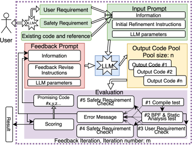
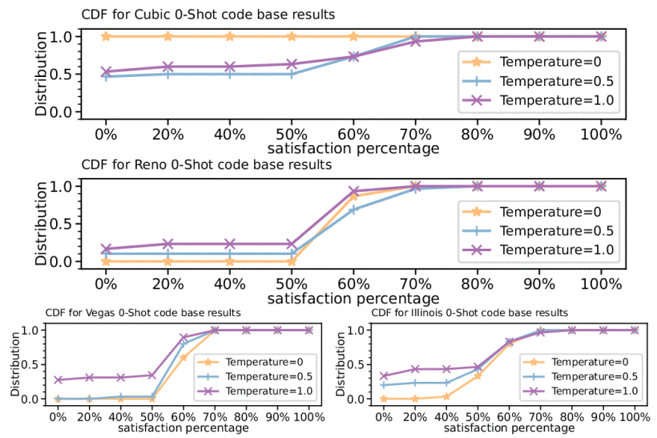
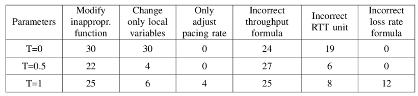
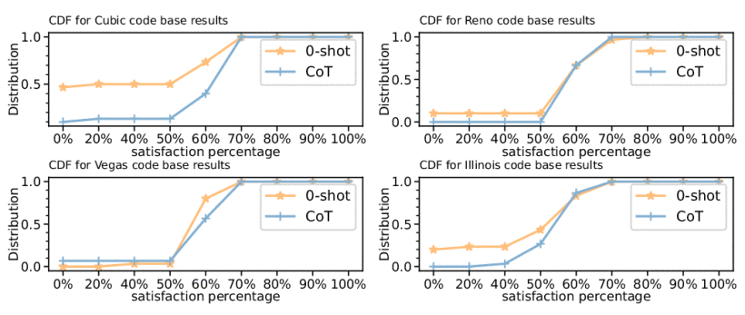
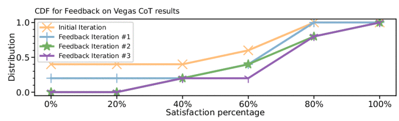

Resources
Abstract
General-purpose congestion control algorithms (CCAs) are designed to achieve general congestion control goals, but they may not meet the specific requirements of certain users. Customized CCAs can meet certain users' specific requirements; however, non-expert users often lack the expertise to implement them. In this paper, we present an exploratory non-expert customized CCA framework, named NECC, which enables non-expert users to easily model, implement, and deploy their customized CCAs by leveraging Large Language Models and the Berkeley Packet Filter (BPF) interface. To the best of our knowledge, we are the first to address the customized CCA implementation problem. Our evaluations using real-world CCAs show that the performance of NECC is very promising, and we discuss the insights that we find and possible future research directions.
Contribution
1. We propose implementing customized CCAs using the code refinement method instead of directly generating the code from scratch.
2. We propose several network domain-specific techniques to address the potentially erroneous outputs of an LLM.
3. We evaluate our proposed framework and these network domain-specific techniques for live streaming users using real-world CCAs, such as Linux Cubic and Reno.
Problem Definition
Customized Congestion Control:
Congestion Control that achieves specific customized requirements, different from general goals
Examples of general goals: fairness, utilization, avoid congestion.
Examples of customized goals: Streaming user wants guarantee 2K-resolution streaming from home
Non-Expert:
Users who may not possess necessary expertise to model, implement, and deploy the customized Congestion Control Algorithms (CCAs).
Major Design
Non-Expert Customized CCA framework, NECC
Convert user's customized specific customized requirement to satisfying deployable congestion control code.
Prompt Design for Functional CCA Code :
1. Existing Congestion Control Code ( Cubic, Reno, … in this work)
2. References, e.g., structure definition, function declaration, etc.
3. Prompt: Modify the code to satisfy the new requirements
Reason: Many ICSE 24' works show LLMs' poor performance in class-level code generation
Network Safety Deployment Requirement:
1. Reduce throughput in high loss rate network
2. Not exceed maximum throughput
Evaluation Metrics:
1. Compiled
2. Passed BPF static analysis, registered to system
3. User's requirement.
4. Safety requirement: Not exceed maximum throughput
5. Safety requirement: Reduce throughput at high loss rate

Major Results
For CDF plots below, lines approaching bottom right corner are better.
RQ1: How to choose LLM parameters?


Zero temperature generates a pool of similar CCA programs
High temperature (T=1) generates more design mistake
Answer: Moderate temperature
Take away: to use the LLMs probabilistic nature
RQ2: How to design prompts?

Answer: Chain-of-thought better than 0-shot
RQ3: How effective is feedback?

Answer: Feedback is more efficient on compilation and BPF static analysis problems
LLM model selection (at submission time Oct. 2024):
GPT-4o: strongest overall
Claude-3.5 Sonnet: does not always follow code-output instructions
GPT-4o mini: weaker than GPT-4o
Video Demo
Citation
If you find this work helpful, please consider citing our paper presented at IEEE ICC'25
@inproceedings{NECC_ICC_2025,
author = {Zhang, Mingrui and Bagheri, Hamid and Xu, Lisong},
title = {Toward Non-Expert Customized Congestion Control},
booktitle = {Proceedings of the 2025 IEEE International Conference on Communications},
year = {2025},
pages = {3606--3612},
doi = {10.1109/ICC52391.2025.11160790}
}